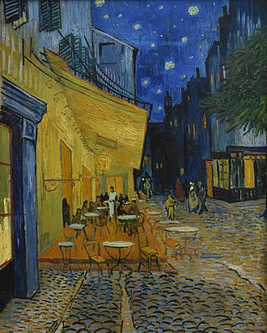
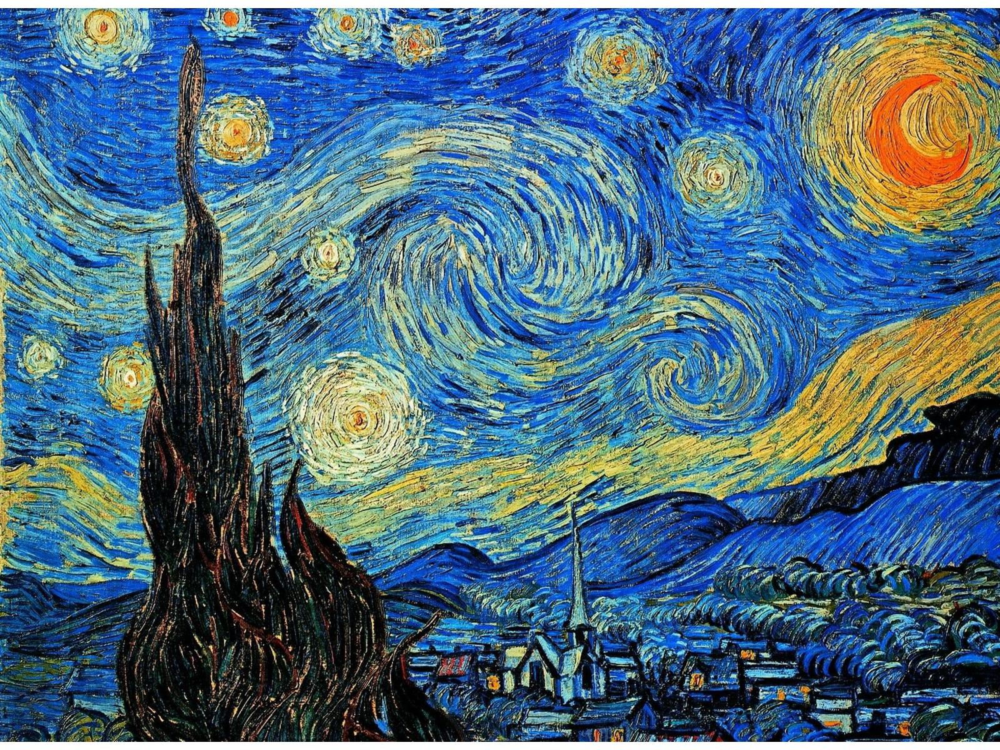

The Potato Eaters(1885)

Sunflowers (1888)

Cafe Terrace at Night (1888)

The Bedroom (1888)

La Nuit etoile (1888)


Les plus connus oeuvres d'art de Van Gogh
|
The Potato Eaters(1885)
|
Sunflowers (1888)
|
Cafe Terrace at Night (1888)  |
The Bedroom (1888)
|
La Nuit etoile (1888)  |